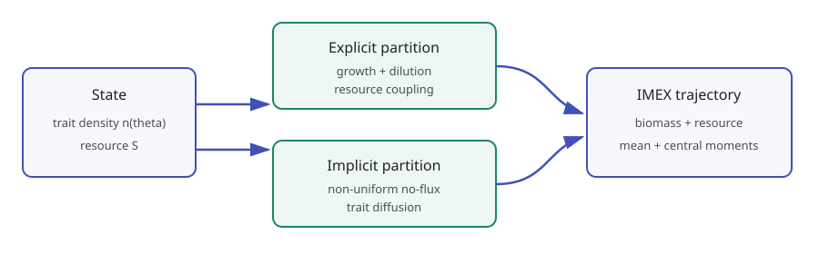
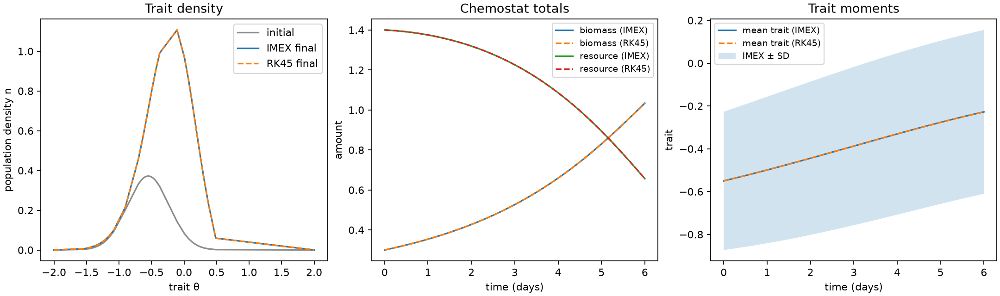

Trait-structured chemostat PDE¶
The
chemostat_pde.py
example couples a population density over a continuous trait coordinate to one
well-mixed resource. It demonstrates non-uniform finite-volume geometry,
implicit diffusion, nonlinear explicit coupling, and structured observables in
one reproducible comparison.

Model and split¶
For population density n(theta, t) and resource S(t), the example solves
dn/dt = n g(theta, S) - D n + d d2n/dtheta2
dS/dt = D (S_in - S) - integral[n g(theta, S) w(theta) dtheta].
Growth combines Monod resource limitation with a Gaussian trait optimum. The positive uptake weight varies exponentially with trait and is scaled by the yield coefficient.
The split supplied to CoreSolver is:
| Partition | Terms |
|---|---|
| implicit linear | no-flux trait diffusion |
| explicit nonlinear | growth, dilution, resource inflow, and consumption |
imex-heun-tr treats the two partitions to second order. The implicit stage is
assembled additively as L y = R y_n + explicit_increment; the right
trapezoidal operator does not multiply the explicit increment.
The example does not clip stage states or project the result onto the positive orthant. Positivity in the canonical run is an observed numerical diagnostic, not an extra model operation.
Non-uniform finite volumes¶
build_trait_grid() calls generate_adaptive_grid() on the curvature of the
initial Gaussian trait profile. More centers are placed where the initial
profile bends rapidly, while the domain endpoints remain fixed.
For adjacent center spacings h_i, the integration weights are
q_0 = h_0
q_i = (h_(i-1) + h_i) / 2
q_(N-1) = h_(N-2).
These are the same control-volume widths used by the non-uniform diffusion
operator. With reflecting boundaries, q^T A = 0, so diffusion alone
conserves total biomass.
Structured observables¶
At every output time the example records resource and five summaries of the trait distribution:
| Observable | Discrete definition |
|---|---|
| biomass | I = sum_i q_i n_i |
| mean trait | rho = sum_i q_i n_i theta_i / I |
| variance | Sigma = sum_i q_i n_i (theta_i-rho)^2 / I |
| skewness | third central moment divided by Sigma^(3/2) |
| kurtosis | fourth central moment divided by Sigma^2 |
Kurtosis is the raw standardized fourth moment, not excess kurtosis.
Run and interpret the comparison¶
From a development checkout:
uv sync --dev
uv run python examples/chemostat_pde.py
The command writes
examples/output/chemostat_pde/chemostat_summary.png and reports maximum state
and biomass differences. The committed reference figure below uses the default
41-cell grid and 0.02-day time step.

The panels compare initial and final trait densities, resource and total biomass, and the evolving mean trait with one standard deviation. Dashed lines come from SciPy RK45 applied to the same semi-discrete system with tight tolerances. This comparison isolates time integration: RK45 uses the identical grid, quadrature, reaction functions, diffusion matrix, and initial state.
The RK45 trajectory is a high-accuracy reference for this finite-dimensional discretization, not an exact solution of the continuous PDE. Grid convergence and time-step convergence remain separate checks.